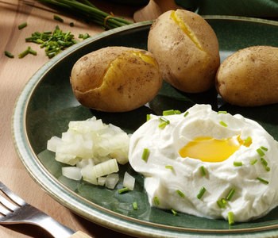

Quark mit Pellkartoffeln und Leinöl

- Für 2 Personen:
- 500g Quark
- Schnittlauch/ Zwiebeln
- 3 EL Milch
- 50ml Leinöl
- 6 mittelgroße Kartoffeln
- Salz & Pfeffer
Setzen Sie einen großen Topf Wasser zum Kochen an. Wenn das Wasser kocht geben Sie die Kartoffeln hinein.
Geben Sie den Quark und die Milch in eine Rührschüssel und rühren beides cremig, anschließend geben Sie den klein geschnittenen Schnittlauch oder die gewürfelten Zwiebeln hinzu und etwa 40ml Leinöl hinzu. Das Ganze wiederholt cremig rühren und abschließend mit Salz und Pfeffer abschmecken.
Beachten Sie hierbei, dass sich der Salzgeschmack im Quark erst nach ein paar Minuten entfaltet. Nach ca. 30min sind die Kartoffeln gar und können abgegossen werden.
Anschließend die Kartoffelschalen von den Kartoffeln abpellen, die fertigen Kartoffeln mit etwas Quark und einem Schluck Leinöl garnieren -- FERTIG